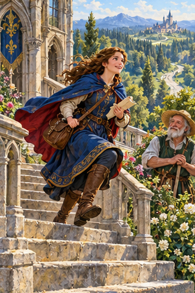
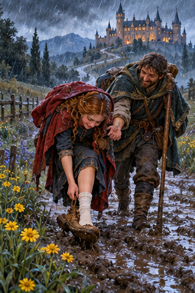
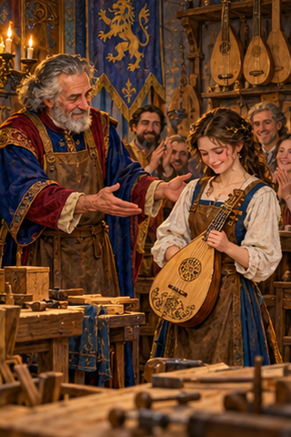
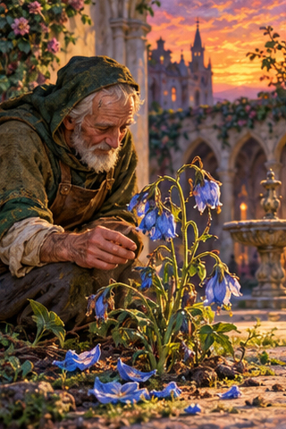
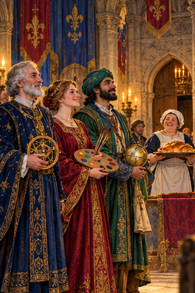
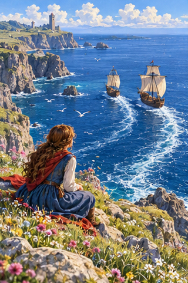
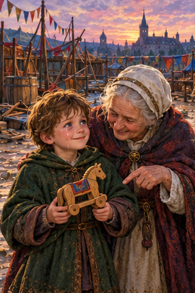
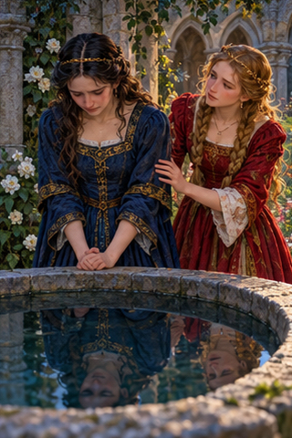
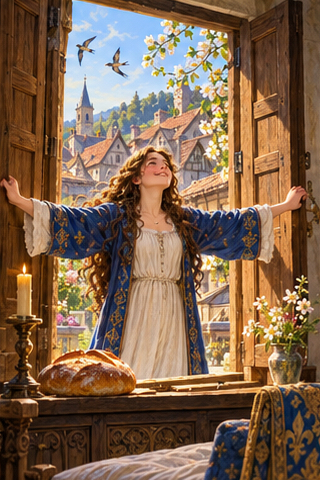
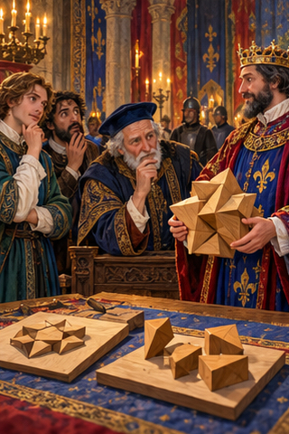

PDD Batch 19 — review only
Ten 320×480 portraits, in manifest order. Not installed.
Original composite
1. PDD 206 — Estar en la flor de la vida
pdd206.jpg
2. PDD 207 — No todo es color de rosa
pdd207.jpg
3. PDD 208 — Echar flores
pdd208.jpg
4. PDD 209 — Como flor de un día
pdd209.jpg
5. PDD 210 — Ser la flor y nata 🌸
pdd210.jpg
6. PDD 211 — Estelas en la mar
pdd211.jpg
7. PDD 212 — No llores porque se terminó, sonríe porque sucedió
pdd212.jpg
8. PDD 213 — Aprendí que el silencio también habla
pdd213.jpg
9. PDD 214 — Decidí enamorarme de la vida, es la única que no me va a dejar
pdd214.jpg
10. PDD 215 — Cuando creíamos que teníamos todas las respuestas, de pronto, cambiaron todas las preguntas
pdd215.jpg